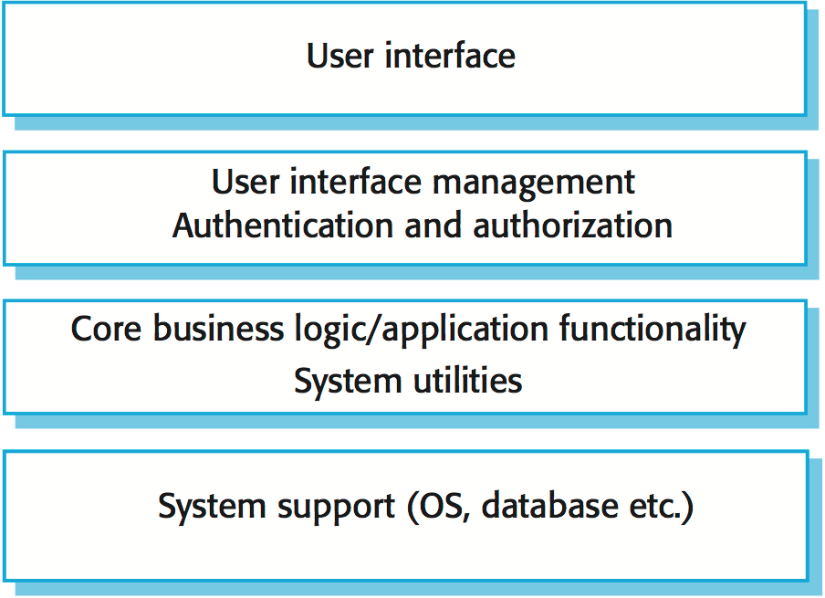
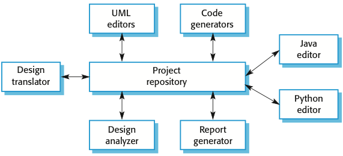
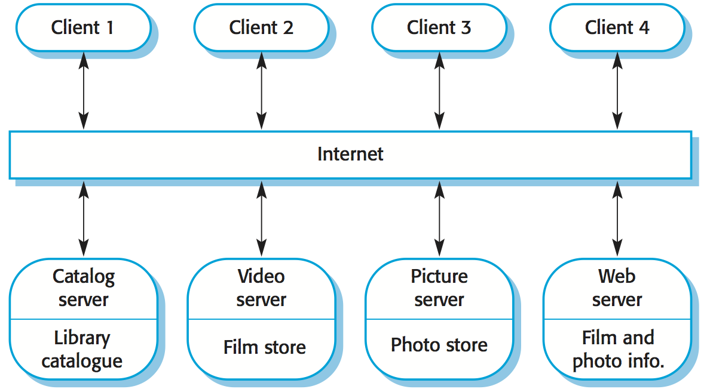
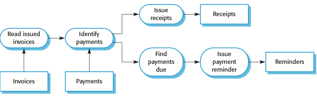

Reference: Sommerville, Software Engineering, 10 ed., Chapter 6
The big picture
Architectural design is a process for identifying the sub-systems making up a system and the framework for sub-system control and communication. The output of this design process is a description of the software architecture. Architectural design is an early stage of the system design process. It represents the link between specification and design processes and is often carried out in parallel with some specification activities. It involves identifying major system components and their communications.
Software architectures can be designed at two levels of abstraction:
- Architecture in the small is concerned with the architecture of individual programs. At this level, we are concerned with the way that an individual program is decomposed into components.
- Architecture in the large is concerned with the architecture of complex enterprise systems that include other systems, programs, and program components. These enterprise systems are distributed over different computers, which may be owned and managed by different companies.
Three advantages of explicitly designing and documenting software architecture:
- Stakeholder communication: Architecture may be used as a focus of discussion by system stakeholders.
- System analysis: Well-documented architecture enables the analysis of whether the system can meet its non-functional requirements.
- Large-scale reuse: The architecture may be reusable across a range of systems or entire lines of products.
Software architecture is most often represented using simple, informal block diagrams showing entities and relationships. Pros: simple, useful for communication with stakeholders, great for project planning. Cons: lack of semantics, types of relationships between entities, visible properties of entities in the architecture.
Uses of architectural models:
- As a way of facilitating discussion about the system design
- A high-level architectural view of a system is useful for communication with system stakeholders and project planning because it is not cluttered with detail. Stakeholders can relate to it and understand an abstract view of the system. They can then discuss the system as a whole without being confused by detail.
- As a way of documenting an architecture that has been designed
- The aim here is to produce a complete system model that shows the different components in a system, their interfaces and their connections.
Architectural design decisions
Architectural design is a creative process so the process differs depending on the type of system being developed. However, a number of common decisions span all design processes and these decisions affect the non-functional characteristics of the system:
- Is there a generic application architecture that can be used?
- How will the system be distributed?
- What architectural styles are appropriate?
- What approach will be used to structure the system?
- How will the system be decomposed into modules?
- What control strategy should be used?
- How will the architectural design be evaluated?
- How should the architecture be documented?
Systems in the same domain often have similar architectures that reflect domain concepts. Application product lines are built around a core architecture with variants that satisfy particular customer requirements. The architecture of a system may be designed around one of more architectural patterns/styles, which capture the essence of an architecture and can be instantiated in different ways.
The particular architectural style should depend on the non-functional system requirements:
- Performance: localize critical operations and minimize communications. Use large rather than fine-grain components.
- Security: use a layered architecture with critical assets in the inner layers.
- Safety: localize safety-critical features in a small number of sub-systems.
- Availability: include redundant components and mechanisms for fault tolerance.
- Maintainability: use fine-grain, replaceable components.
Architectural views
Each architectural model only shows one view or perspective of the system. It might show how a system is decomposed into modules, how the run-time processes interact or the different ways in which system components are distributed across a network. For both design and documentation, you usually need to present multiple views of the software architecture.
4+1 view model of software architecture:
- A logical view, which shows the key abstractions in the system as objects or object classes.
- A process view, which shows how, at run-time, the system is composed of interacting processes.
- A development view, which shows how the software is decomposed for development.
- A physical view, which shows the system hardware and how software components are distributed across the processors in the system.
- Related using use cases or scenarios (+1).
Architectural patterns
Patterns are a means of representing, sharing and reusing knowledge. An architectural pattern is a stylized description of a good design practice, which has been tried and tested in different environments. Patterns should include information about when they are and when the are not useful. Patterns may be represented using tabular and graphical descriptions.
Model-View-Controller
- Serves as a basis of interaction management in many web-based systems.
- Decouples three major interconnected components:
- The model is the central component of the pattern that directly manages the data, logic and rules of the application. It is the application's dynamic data structure, independent of the user interface.
- A view can be any output representation of information, such as a chart or a diagram. Multiple views of the same information are possible.
- The controller accepts input and converts it to commands for the model or view.
- Supported by most language frameworks.

| Pattern name | Model-View-Controller (MVC) |
| Description | Separates presentation and interaction from the system data. The system is structured into three logical components that interact with each other. The Model component manages the system data and associated operations on that data. The View component defines and manages how the data is presented to the user. The Controller component manages user interaction (e.g., key presses, mouse clicks, etc.) and passes these interactions to the View and the Model. |
| Problem description | The display presented to the user frequently changes over time in response to input or computation. Different users have different needs for how they want to view the program.s information. The system needs to reflect data changes to all users in the way that they want to view them, while making it easy to make changes to the user interface. |
| Solution description | This involves separating the data being manipulated from the manipulation logic and the details of display using three components: Model (a problem-domain component with data and operations, independent of the user interface), View (a data display component), and Controller (a component that receives and acts on user input). |
| Consequences | Advantages: views and controllers can be easily be added, removed, or changed; views can be added or changed during execution; user interface components can be changed, even at runtime. Disadvantages: views and controller are often hard to separate; frequent updates may slow data display and degrade user interface performance; the MVC style makes user interface components (views, controllers) highly dependent on model components. |
Layered architecture
- Used to model the interfacing of sub-systems.
- Organizes the system into a set of layers (or abstract machines) each of which provide a set of services.
- Supports the incremental development of sub-systems in different layers. When a layer interface changes, only the adjacent layer is affected.
- However, often artificial to structure systems in this way.

| Name | Layered architecture |
| Description | Organizes the system into layers with related functionality associated with each layer. A layer provides services to the layer above it so the lowest-level layers represent core services that are likely to be used throughout the system. |
| When used | Used when building new facilities on top of existing systems; when the development is spread across several teams with each team responsibility for a layer of functionality; when there is a requirement for multi-level security. |
| Advantages | Allows replacement of entire layers so long as the interface is maintained. Redundant facilities (e.g., authentication) can be provided in each layer to increase the dependability of the system. |
| Disadvantages | In practice, providing a clean separation between layers is often difficult and a high-level layer may have to interact directly with lower-level layers rather than through the layer immediately below it. Performance can be a problem because of multiple levels of interpretation of a service request as it is processed at each layer. |
Repository architecture
- Sub-systems must exchange data. This may be done in two ways:
- Shared data is held in a central database or repository and may be accessed by all sub-systems;
- Each sub-system maintains its own database and passes data explicitly to other sub-systems.
- When large amounts of data are to be shared, the repository model of sharing is most commonly used a this is an efficient data sharing mechanism.

| Name | Repository |
| Description | All data in a system is managed in a central repository that is accessible to all system components. Components do not interact directly, only through the repository. |
| When used | You should use this pattern when you have a system in which large volumes of information are generated that has to be stored for a long time. You may also use it in data-driven systems where the inclusion of data in the repository triggers an action or tool. |
| Advantages | Components can be independent--they do not need to know of the existence of other components. Changes made by one component can be propagated to all components. All data can be managed consistently (e.g., backups done at the same time) as it is all in one place. |
| Disadvantages | The repository is a single point of failure so problems in the repository affect the whole system. May be inefficiencies in organizing all communication through the repository. Distributing the repository across several computers may be difficult. |
Client-server architecture
- Distributed system model which shows how data and processing is distributed across a range of components, but can also be implemented on a single computer.
- Set of stand-alone servers which provide specific services such as printing, data management, etc.
- Set of clients which call on these services.
- Network which allows clients to access servers.

| Name | Client-server |
| Description | In a client-server architecture, the functionality of the system is organized into services, with each service delivered from a separate server. Clients are users of these services and access servers to make use of them. |
| When used | Used when data in a shared database has to be accessed from a range of locations. Because servers can be replicated, may also be used when the load on a system is variable. |
| Advantages | The principal advantage of this model is that servers can be distributed across a network. General functionality (e.g., a printing service) can be available to all clients and does not need to be implemented by all services. |
| Disadvantages | Each service is a single point of failure so susceptible to denial of service attacks or server failure. Performance may be unpredictable because it depends on the network as well as the system. May be management problems if servers are owned by different organizations. |
Pipe and filter architecture
- Functional transformations process their inputs to produce outputs.
- May be referred to as a pipe and filter model (as in UNIX shell).
- Variants of this approach are very common. When transformations are sequential, this is a batch sequential model which is extensively used in data processing systems.
- Not really suitable for interactive systems.

| Name | Pipe and filter |
| Description | The processing of the data in a system is organized so that each processing component (filter) is discrete and carries out one type of data transformation. The data flows (as in a pipe) from one component to another for processing. |
| When used | Commonly used in data processing applications (both batch- and transaction-based) where inputs are processed in separate stages to generate related outputs. |
| Advantages | Easy to understand and supports transformation reuse. Workflow style matches the structure of many business processes. Evolution by adding transformations is straightforward. Can be implemented as either a sequential or concurrent system. |
| Disadvantages | The format for data transfer has to be agreed upon between communicating transformations. Each transformation must parse its input and unparse its output to the agreed form. This increases system overhead and may mean that it is impossible to reuse functional transformations that use incompatible data structures. |
Application architectures
Application systems are designed to meet an organizational need. As businesses have much in common, their application systems also tend to have a common architecture that reflects the application requirements. A generic application architecture is an architecture for a type of software system that may be configured and adapted to create a system that meets specific requirements. application architectures can be used as a:
- Starting point for architectural design.
- Design checklist.
- Way of organizing the work of the development team.
- Means of assessing components for reuse.
- Vocabulary for talking about application types.
Examples of application types:
- Data processing applications
- Data driven applications that process data in batches without explicit user intervention during the processing.
- Transaction processing applications
- Data-centred applications that process user requests and update information in a system database.
- Event processing systems
- Applications where system actions depend on interpreting events from the system's environment.
- Language processing systems
- Applications where the users' intentions are specified in a formal language that is processed and interpreted by the system.